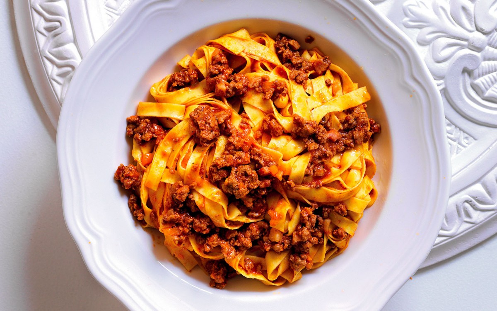

Tagliatelle alla Bolognese

Description
An Italian classic; beef and vegetables with wine, broth, pancetta, and
tomato sauce simmer away for around 3 hours for a Bolognese sauce that clings
perfectly to fresh tagliatelle.
Ingredients
- 1 LB. of fresh egg tagliatelle
- 3/4 LB. of ground beef
- 1/3 LB. of pancetta
- 1 1/4 CUPS of tomato passata or tomato purée
- 3/4 CUP of beef broth
- 2 of carrots
- 2 of celery stalks
- 1/2 of small onion
- 1/2 CUP of red (or dry white) wine
- 1/2 CUP of milk
- extra-virgin olive oil
- salt
- pepper
Steps
- Chop the pancetta. Trim the celery, carrots and onion, and mince into fine pieces.
- Heat a pan with a drizzle of oil, sauté the pancetta, add the vegetables and gently sweat until soft.
- Add the meat and sauté for 5 minutes. Add 1/2 cup wine and allow to completely evaporate.
- Add the tomato passata and stir for a few minutes. Add 1/2 cup milk and cover with the broth.
- Cook the meat sauce for 2-3 hours, adding more broth every now and then while adjusting the seasoning.
- Cook the tagliatelle in boiling salted water for 3-4 minutes or until al dente, drain and serve with generous amounts of sauce.